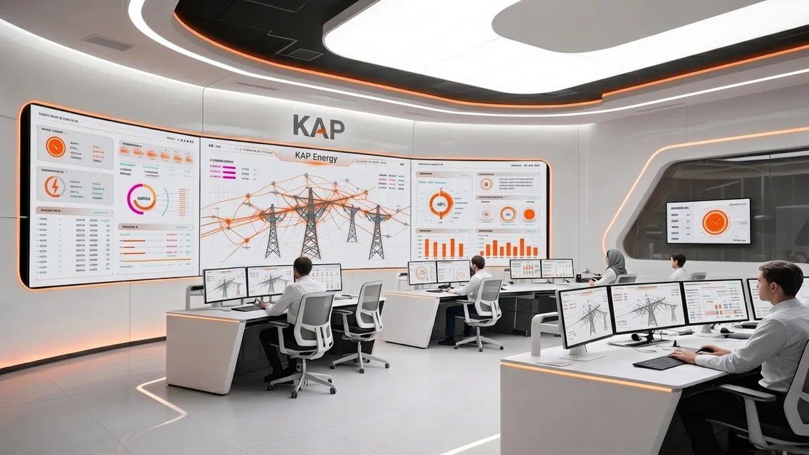
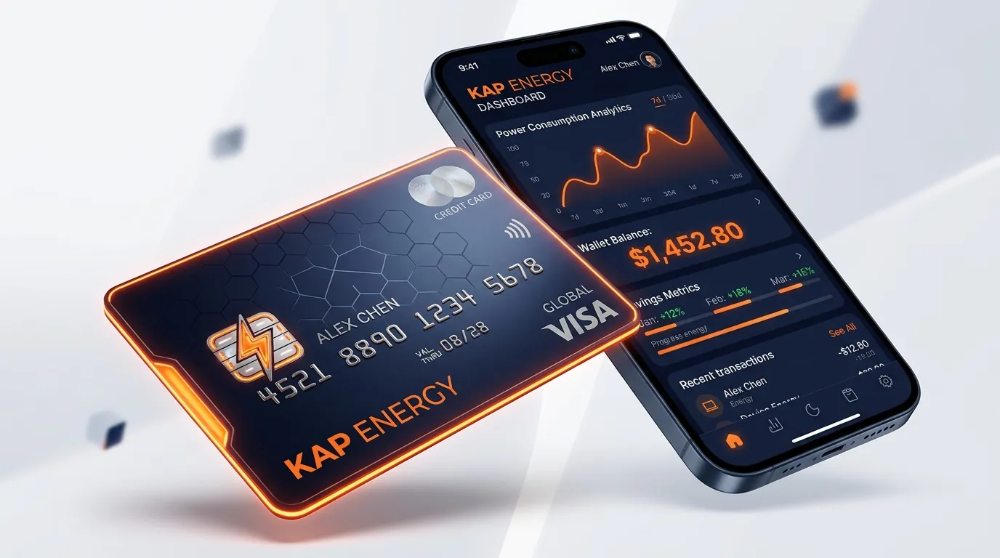
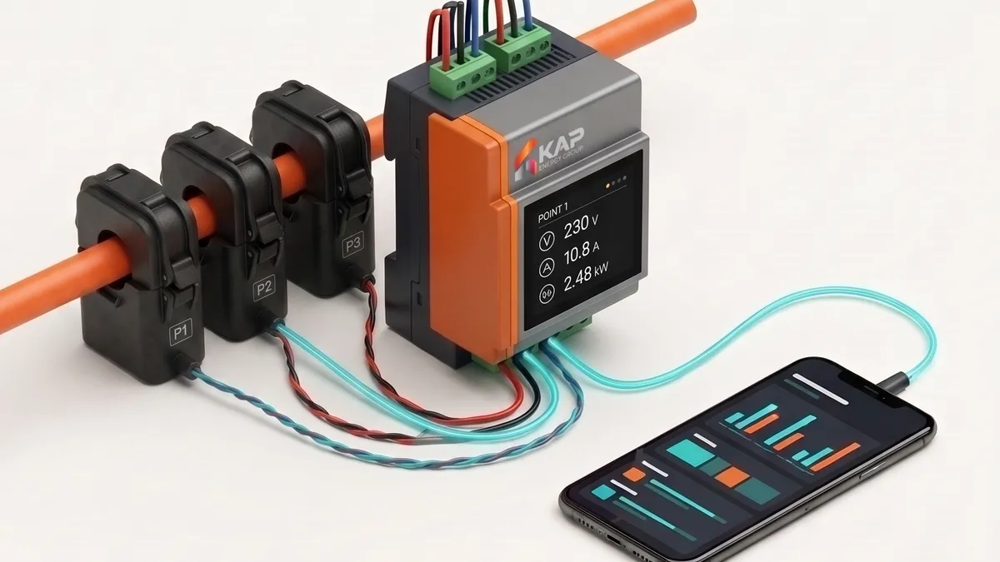
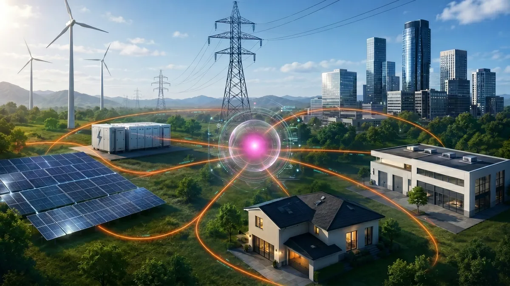
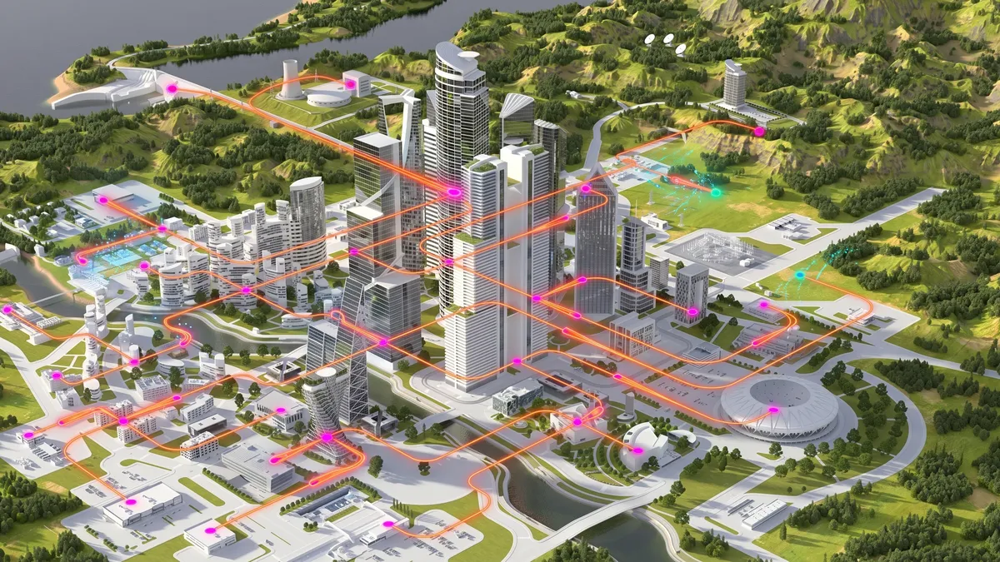
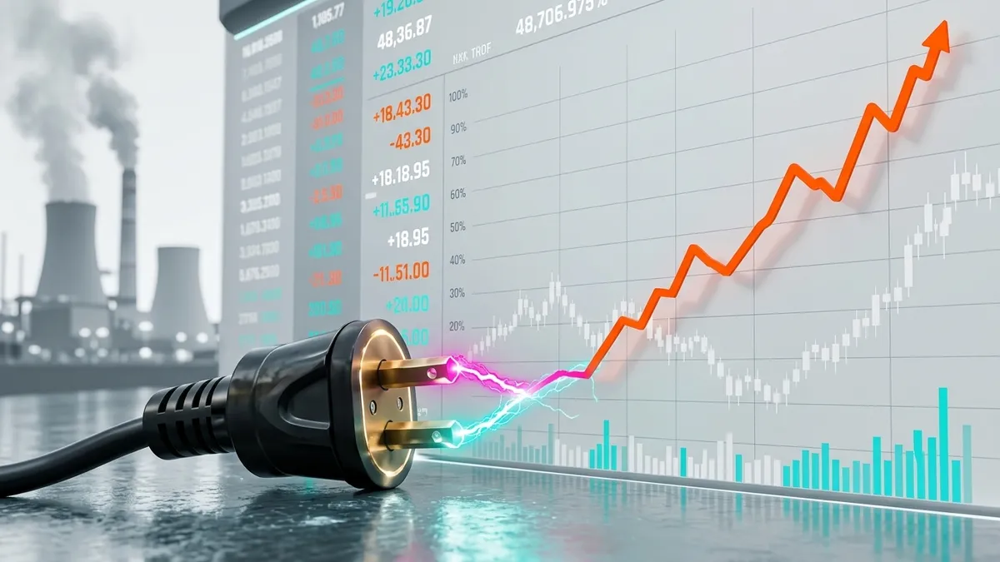

هوش مصنوعینقش الگوریتمهای یادگیری عمیق در تشخیص خطای شبکه توزیع
مدلهای هوش مصنوعی KAP برای شناسایی بلادرنگ خطاها؛ با هدف دقت ۹۵ درصد در سال دوم.
بیشتر بخوانید
حکمرانی انرژی از یک اندازهگیری دقیق شروع میشود. تیم کاپ دستگاه ESA را طراحی، مونتاژ و کالیبره میکند تا دادههای خام برق به تصمیم هوشمند تبدیل شوند.
مدیریت هوشمند مصرف برق ساختمان و صنعت | کاهش قبض و پیک بار
در دورانی که شریانهای انرژی تحت فشارهای ساختاری و بحرانهای غیرقابل پیشبینی در آستانه فروپاشی قرار دارند، KAP صرفاً یک ابزار تحلیلی نیست، بلکه زیرساختی حیاتی برای بقا و پایداری ملی است. با ترکیب پایش دقیق اینترنت اشیاء در لبه شبکه و الگوریتمهای هوش مصنوعی پیشبینانه، دادههای خام برق را به راهکارهای هوشمند مدیریت بار زمان واقعی تبدیل میکنیم.
از طریق یک مدل استقرار نوآورانه، KAP به میلیونها خانوار و کسبوکار این قدرت را میدهد تا بدون کوچکترین آسیبی به رفاه و امنیت خود، مصرف غیرضروری برق خود را کنترل کنند. این صرفهجوییهای پنهان، با تبدیل شدن به گواهیهای صرفهجویی انرژی معتبر و قابل معامله، به یک نیروگاه مجازی متمرکز و یکپارچه تبدیل میشوند؛ راهکاری استراتژیک و اقتصادی که کشور را در سختترین شرایط بحران، استوار نگه میدارد.
کاپ یک دستگاه کوچک به نام ESA (Energy Saving Application) کنار تابلو برق ساختمان نصب میکند. این دستگاه نشان میدهد برق کجا، کی و برای چه مصرف میشود، مصرف بیجا را پیدا میکند و فقط با اجازهٔ شما آن را کم میکند؛ بدون اینکه آسایش خانه یا کار اداره و کارخانه به هم بخورد. وقتی ساختمانهای زیادی این کار را بکنند، فشار روی شبکهٔ برق در ساعتهای اوج کم میشود و خاموشی کمتر میشود.
مصرف خارج از نیاز، الگوهای غیرعادی و فرصتهای قابل مدیریت همیشه از روی قبض مشخص نیستند.
هر خانه، ساختمان یا صنعت محدودیتها و شرایط بهرهبرداری خودش را دارد.
بدون خط مبنا و سنجش نتیجه، نمیتوان فقط از روی کاهش یک عدد درباره اثر اقدام قضاوت کرد.


ESA کاپ (Energy Saving Application) روی تابلو برق کلاس مینشیند و مصرف روشنایی و سرمایش را لحظهبهلحظه میسنجد؛ چراغها وقتی لازم است روشناند و آموزش بدون وقفه ادامه دارد.
در انتظار نصب دستگاه ESA
راهکار مدارس و دانشگاهها ←این دقیقاً هسته ارزشآفرینی پلتفرم است — نه صرف نصب حسگر یا نمایش داشبورد.
پایش مصرف در نقاط موردنظر
شناسایی الگوها و فرصتها
یافتن مصرف قابل اصلاح
پیشنهاد متناسب با شرایط
ارزیابی اثر نسبت به خط مبنا


در کارخانه، کاپ مصرف هر خط و هر دستگاه را جداگانه میسنجد؛ بار ساعتهای اوج جابهجا میشود و خط تولید بدون توقف کار میکند.
خط تولید خاموش است
راهکار صنعت ←مدیریت مصرف یک خانه، دانشگاه، کارخانه و شبکه برق نیازهای متفاوتی دارد.
مدیریت سادهتر مصرف با حفظ آسایش
بیشتر بدانید ←شناسایی مصرف قابل اصلاح بدون اختلال در فعالیت آموزشی
بیشتر بدانید ←تصمیمگیری بر اساس مصرف واقعی، ساعات فعالیت و نتیجه اقدامات
بیشتر بدانید ←مدیریت بار با توجه به فرایند، تداوم تولید و محدودیتهای عملیاتی
بیشتر بدانید ←توانیر و توزیع، خورشیدی، ژنراتور، کنتورسازان و سازندگان تجهیزات برق
بیشتر بدانید ←

در ساختمانهای اداری، کاپ میداند کجا کار جریان دارد و کجا خالی است؛ چراغ و سرمایش اتاقهای خالی خودکار خاموش میشود و کار هیچکس متوقف نمیشود. نتیجه: کاهش محسوس مصرف، بدون آسیب به رفاه کارکنان.
در انتظار نصب دستگاه ESA
راهکار سازمانها و شرکتها ←کاپ فراتر از پایش و تحلیل، بستری هوشمند برای تبدیل صرفهجویی تأییدشده به یک دارایی معاملهپذیر فراهم میسازد. از گواهیهای صرفهجویی انرژی تا تجهیزات کنترل هوشمند، همراه با ۵ سال خدمات پس از فروش و پشتیبانی تخصصی.

جدیدترین تحقیقات و تحلیلهای تیم کاپ در حوزه مدیریت هوشمند انرژی

هوش مصنوعیمدلهای هوش مصنوعی KAP برای شناسایی بلادرنگ خطاها؛ با هدف دقت ۹۵ درصد در سال دوم.
بیشتر بخوانید
سختافزارسنسورهای CT طراحیشده با توانایی اندازهگیری بار هر دستگاه بدون نیاز به پلاگین اضافی.
بیشتر بخوانید
شبکه هوشمندگزارش عملکرد پروژههای اجرایی KAP در بهینهسازی مصرف و کاهش پیک بار.
بیشتر بخوانید
نیروگاه مجازیچگونه تجمیع ظرفیتهای پراکنده مدیریت مصرف میتواند به پایداری شبکه ملی برق کمک کند.
بیشتر بخوانید سلامت و IoT
سلامت و IoT
چگونه تغییرات غیرعادی در الگوی مصرف برق میتواند نشانهای از تغییر در وضعیت سالمندان باشد.
بیشتر بخوانید
اقتصاد انرژیچرا کاهش شدت انرژی حیاتی است و مدیریت مصرف چگونه میتواند به رشد GDP کمک کند.
بیشتر بخوانید

از طریق استقرار در ازای قرارداد گواهی صرفهجویی انرژی، KAP به میلیونها خانوار و کسبوکار این قدرت را میدهد تا بدون کوچکترین آسیبی به رفاه و امنیت خود، مصرف غیرضروری برق خود را کنترل کنند. راهکاری استراتژیک و اقتصادی که کشور را در سختترین شرایط بحران، استوار نگه میدارد.
شبکه زیر فشار ناترازی
چشمانداز کاپ، پیوند ظرفیتهای پراکنده مدیریت مصرف در نیروگاه مجازی کشور است.